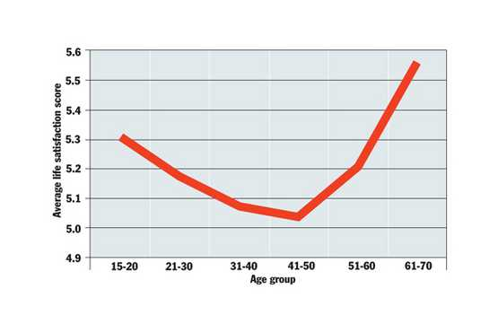
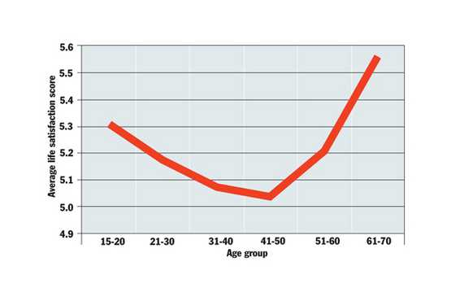
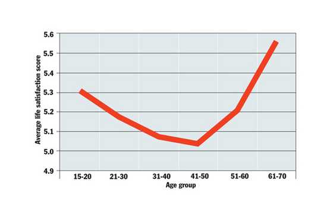

Please Select a Patient Name
"It is a measure of the progress made over the last quarter century that mental health is now a subject that accrues column inches the whole year round; the prominent Time to Talk and Heads Together campaigns have provided momentum, and even Prince Harry rallied to the cause, which all helps dissipate old prejudices. In this way, real progress is being made is in the fight to overcome stigma, which sees misplaced attributions of shame that have long been an impediment to those suffering. Another front in the struggle for mental health is the ongoing effort to ensure that, once people do seek help, they are not let down by a system that fails to provide it – and provide it quickly. In practice, this means rising to the political and logistical challenges of maintaining properly funded and adequately organised mental health services available via the NHS, where progress has been made." - Independent UK
